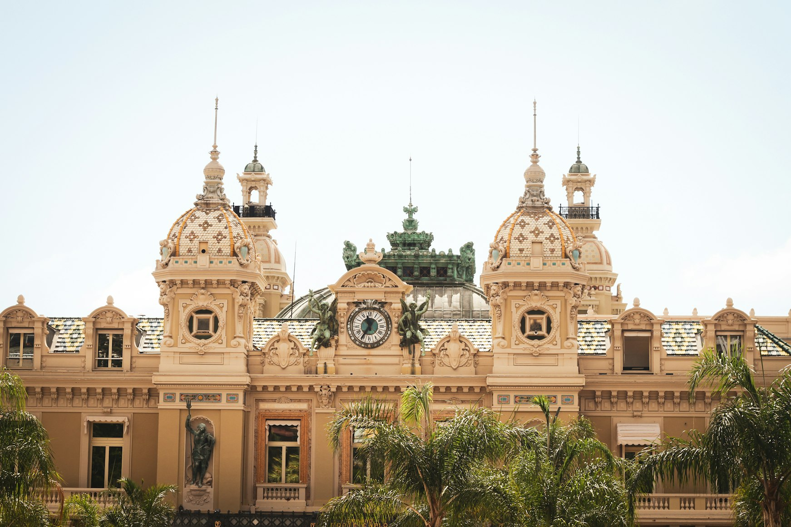
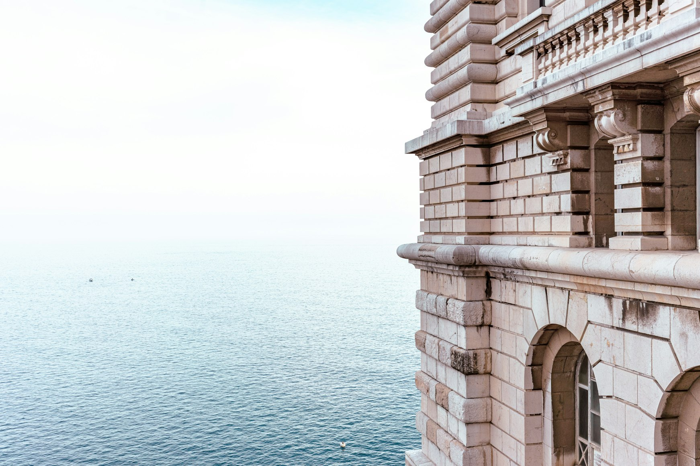
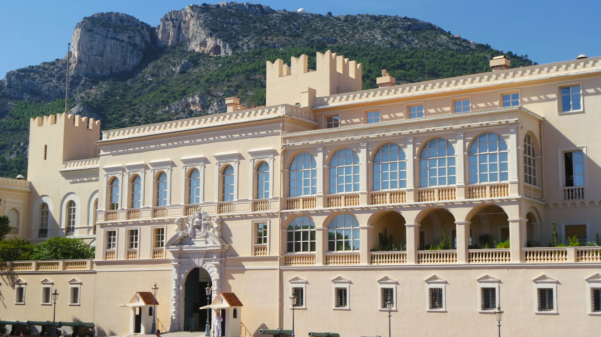
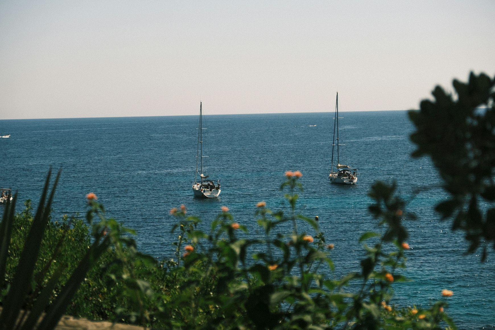
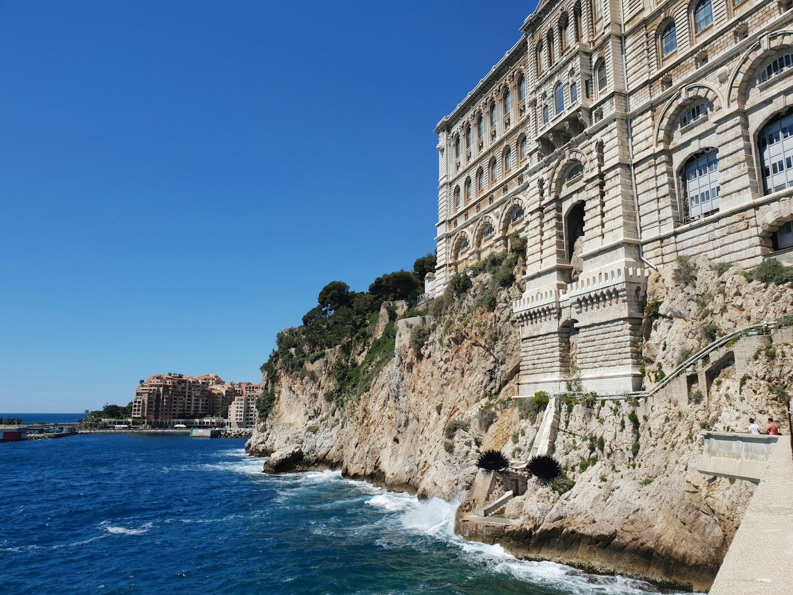
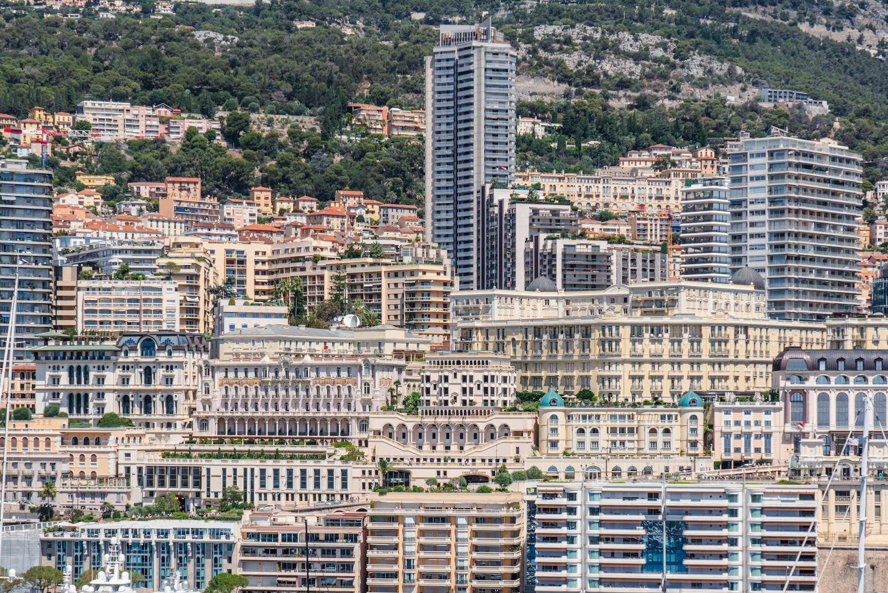
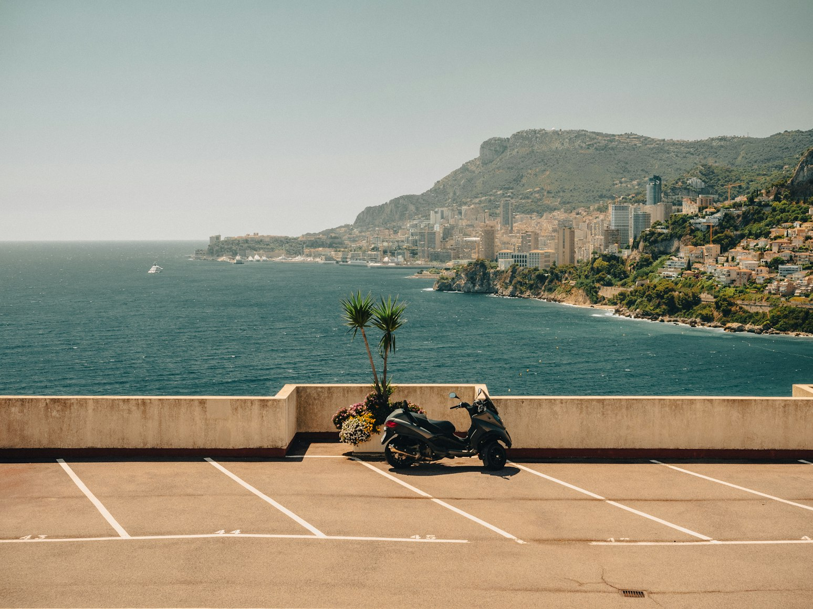

Monaco is usually described in the language of spectacle: yachts, diamonds, Formula 1, grand hotels, the theatrical curve of Casino Square. But the Principality reveals itself most clearly before it begins performing.
If you wake up early enough, Monaco changes its tone. The facades soften. The marble terraces are still cool from the night before. The sea takes on that particular Riviera morning light — clear, almost polished. And for a brief moment, the streets feel strangely personal, as though the entire country has been left unlocked.
These are the hours when Monaco is worth seeing properly — before café terraces fill up, before cameras take over the palace square, before the harbor starts shining too loudly with luxury.
Early morning gives texture back to the Principality: stone staircases, garden paths, church bells, the smell of coffee near Place d’Armes, the silence of Monaco-Ville before the first tour buses arrive.
This guide is dedicated to that version of Monaco — cinematic, atmospheric, and perfectly explored on foot.
Place du Casino Before the Supercars Arrive
Few urban spaces in Europe understand drama as well as Place du Casino.
During the day, Place du Casino feels more like a showroom for luxury Monaco. At 7:30 in the morning, it becomes quieter and far more beautiful — when all that remains is light, stone, and Belle Époque facades.

The Casino de Monte-Carlo stands almost motionless, catching the first clean light of the day. Hôtel de Paris feels more like a private palace than a hotel. Café de Paris has not yet filled with voices. The palms are still. The polished stone reflects the sky.
This is the best time for photographs without visual noise. Stand near the gardens and look back toward the casino. Then walk slowly toward One Monte-Carlo, where the boutiques are still closed and the entire district feels like a film set between scenes.
The real magic of the square comes from contrast. It feels quiet not because it lacks grandeur, but because the grandeur has not fully awakened yet.
Port Hercule in the Blue Morning Light
Port Hercule is Monaco’s grand amphitheater: cliffs, towers, yachts, and the Rock of the old town rising above the water like a backdrop.

Early in the morning, the harbor feels especially alive — but quietly, almost privately. Yacht crews move without rush. The first delivery vans pass along the quay. The water is often calm enough to become a mirror for masts and high-rises.
Walk along the docks slowly. Don’t hurry toward the famous viewpoints. The pleasure here is in the details: perfectly coiled ropes, gulls in the morning sky, the smell of salt and fuel, the first espresso cups appearing on café tables.
From certain angles, Port Hercule shows the entire idea of Monaco at once: the old fortress above, modern towers behind it, enormous yachts below, and the Mediterranean holding everything together.
La Condamine Market — The Moment Monaco Becomes Local
For all its international luxury, Monaco still has its own morning rituals. La Condamine is where you feel them.
Place d’Armes wakes earlier than the rest of the city. Fruit stalls open one by one. Regular visitors arrive with familiar ease. Coffee is served quickly. Conversations remain low and calm.
This market is not rustic in the Provençal sense — this is still Monaco. But it has warmth, rhythm, and the rare feeling that people genuinely live here.
Come here not for sightseeing, but for breakfast. Order coffee and something simple, sit down, and watch the square slowly assemble itself.
This is the antidote to postcard Monaco. Here, the Principality feels real.
Rampe Major — The Most Cinematic Climb in Monaco
The walk up to Monaco-Ville is short, but it completely changes the mood of the city.
Rampe Major rises from the Condamine district toward the Rock, running alongside old defensive walls. In the morning, before the tour groups arrive, the climb feels almost cinematic: pale stone, sharp shadows, sudden flashes of blue harbor behind you.
It is one of the best transitions in Monaco. Below is the busy market district. A little higher, the port opens wider and wider. At the top, the old Principality appears: palace square, narrow streets, ochre facades, and quiet shutters.
Do not rush this walk. Turn around often.
Place du Palais Before the Changing of the Guard
Place du Palais is one of those squares that depends entirely on timing.

Arrive later in the day and you’ll find crowds waiting for the changing of the guard ceremony. Arrive early and the palace feels almost silent.
Prince’s Palace is less theatrical than Casino Square, but far more significant. This is the historical heart of Monaco — the place where the Principality feels older than its reputation.
The morning light works beautifully here. It warms the stone facade and opens the view toward Port Hercule. Walk to the edge of the square and look down: the harbor suddenly feels miniature, the yachts reduced to white brushstrokes on the water.
Monaco-Ville Before the Tour Groups Arrive
Monaco-Ville is often called “Le Rocher” — the Rock — and it genuinely feels like a separate town suspended above the sea.
Narrow streets, pastel facades, small restaurants preparing for lunch, the smell of baked bread and salt in the air. In the morning, the district has an almost vanished kind of European elegance.
Early morning is what makes this neighborhood special. Later in the day, guided tours arrive and the atmosphere changes completely.
Walk without a plan. Let the streets lead you toward the cathedral, then toward the gardens, then back to another viewpoint.
This is no longer Monaco of speed. This is Monaco of stone, monarchy, memory, and church bells.
Saint-Martin Gardens — Sea, Air, and Silence

Saint-Martin Gardens are one of the most graceful places in Monaco early in the morning.
The gardens stretch along the Rock beside the Oceanographic Museum and offer shaded paths, sculptures, and wide Mediterranean views.
In a country known for density, these gardens feel surprisingly spacious.
Come before the museum opens. The paths are still empty, the benches unoccupied, and the sea below the cliffs feels endless.
The Oceanographic Museum and Its Terraces

Even if you do not plan to go inside, the Oceanographic Museum is worth seeing in the morning.
The building seems to grow directly out of the cliff itself, as though carved from the same stone holding Monaco above the sea. In the morning light, the facade becomes almost golden.
The museum terraces offer some of the best views along the coast. This is where you truly feel the edge of the land — the moment stone ends and the sea begins.
Larvotto Beach Before the Heat
Larvotto is Monaco’s easiest seaside pleasure, and it looks best in the morning.
Before the beach clubs fully wake up, the promenade stays calm. Runners pass by, early swimmers enter the water, and the sea remains perfectly clear.
Monaco often feels vertical and polished. Larvotto feels the opposite: horizontal and almost elemental.
Sometimes sitting here for forty quiet minutes before breakfast is enough.
The Princess Grace Japanese Garden
The Japanese Garden feels unexpectedly delicate and quiet for a place like Monaco.
It works not through extravagance, but through restraint: water, stone, bridges, reflections, and perfectly composed lines.
In the morning, the garden becomes especially beautiful. The light is softer, the paths are empty, and the surrounding high-rises seem to dissolve into the background.
Jardins de la Petite Afrique
Hidden beside Monte-Carlo’s most luxurious addresses is one of the most elegant corners of Monaco in the early morning.
Palms and exotic plants create a soft green barrier around Casino Square. It is the perfect place to pause after walking through the district and simply watch the city wake up.
The Exotic Garden and the View Above Monaco
The Exotic Garden has always been one of Monaco’s great panoramic viewpoints.

After its renovation and reopening, early morning once again became the best time to visit. From here, Monaco looks almost impossible: cliffs, towers, terraces, and sea compressed into an incredibly small space.
Fontvieille Harbor — A Quieter Side of Monaco
Fontvieille is far less theatrical than Port Hercule, and that is exactly its charm.
In the morning, the harbor feels residential and calm. Yachts sit quietly in the marina, terraces catch the sunlight, and the district feels more lived-in and genuine.
This is the place for travelers who want to see Monaco without the constant performance of luxury.
The Princess Grace Rose Garden
The Princess Grace Rose Garden is one of Monaco’s softest morning spaces.
Its beauty is delicate: roses, pathways, quietness, and a feeling of memory. In the morning, the flowers smell stronger, the air feels cooler, and the colors become richer.
Monaco’s Lifts and Staircases

One of Monaco’s most underrated pleasures is moving vertically through the city.
Lifts, staircases, and passageways turn an ordinary walk into a sequence of cinematic reveals. You step into an elevator beside a road, exit near a garden, and suddenly the sea appears far below you.
In Monaco, movement itself becomes part of the experience.
The Perfect Early-Morning Route Through Monaco
Start at Place du Casino around 7:15 AM. Walk through Jardins de la Petite Afrique and descend toward Port Hercule.
Then head to La Condamine Market for breakfast before climbing Rampe Major into Monaco-Ville. Spend the late morning around the palace square, the old town, Saint-Martin Gardens, and the Oceanographic Museum.
This route reveals Monaco in layers: luxury, harbor, market, old town, sea, and cliffs.
Where to Stay for Atmospheric Mornings
Monte-Carlo is the best choice for a first visit and cinematic walks.
Fontvieille feels quieter and more residential.
Larvotto is ideal for morning swims and a slower coastal rhythm.
Monaco-Ville is best for historical atmosphere and panoramic views.
Final Thought
Monaco rewards precision. The same square can feel loud or magnificent depending entirely on the hour.
Early morning removes the obviousness from the Principality. It stops being only about wealth and begins speaking through light, stone, sea, gardens, and scale.
That is the version of Monaco worth waking up for.